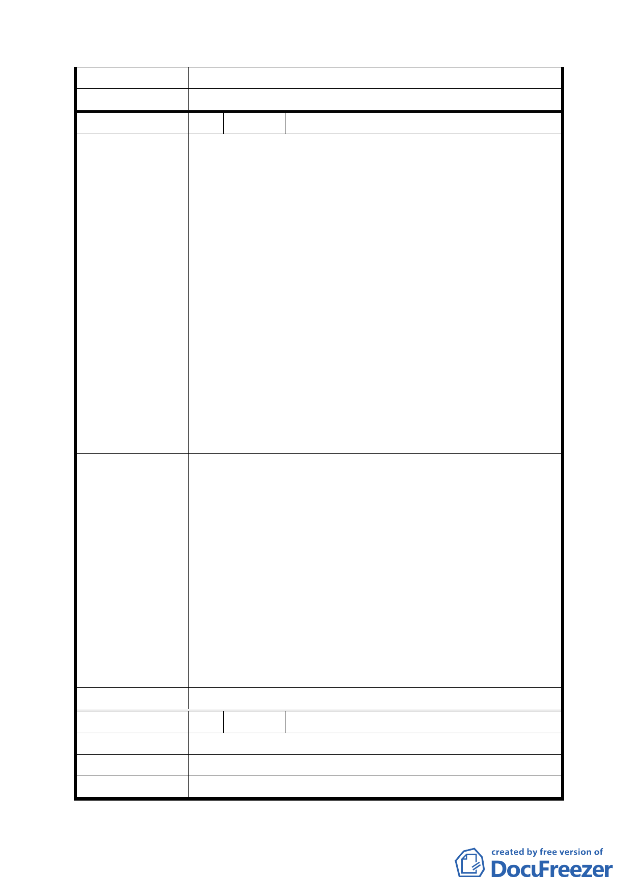

委員會決議
編號
陳情理由
建議辦法
委員會決議
編號
陳情理由
建議辦法
委員會決議
七、本記錄加發都委會。
同編號 4。
10 陳情人 林文軒君等 16 人(中山區培英市場)
茲針對市政府「變更臺北市培英市場用地等 5 處市場用
地為機關用地、公園用地及公共服務設施用地等細部計
畫案」乙案，提出本區(大直地區)附近居民意見。
一、查培英市場預定地早於民國 77 年即已列入本市都市
計畫案內，迄 20 餘年，均未付諸實施，此舉已為本
地區民眾嘖有煩言，咸認為「政府失靈」「失信於民」
之又一表現。
二、大直地區(轄有大直、永安、劍潭、北安、成功及金
泰等六個里)人口急遽增加，目前已逾 7 萬，僅有一
處傳統市場及若干超市，市府當初規劃之培英市場預
定地，地理位置適中，四周圍繞住宅區，交通便利，
乃針對地區發展、住民增加、民生便利等實際需要而
有見之德政，但延宕經年，未予動工興建；今又驚傳
擬變更用途，本地區大部分居民，確實難以接受，議
論紛紛，故將民間輿情、反對聲浪陳情主管部門卓參。
一、大直地區自從基隆河截彎取直後，幅員擴大，人口
急遽成長，經濟活動頻仍，但就業機會並未相對增
加，如將培英市場預定地，興建綜合性商業大樓，類
似市場、小吃攤位、日用百貨、活動中心、地下停車
場…等等資本小之生意，一方面可創造本地區居民就
業機會，二方面政府既可增加收入，又可繁榮地方，
可謂一舉數得。
二、變更用途僅能滿足小部分既得利益者，而損害無知
大眾之社會權益，實非明智政府所為。仍請按原訂計
畫儘早興建培英市場為主的綜合商業大樓，以符民
願，而利民生。
同編號 4。
11 陳情人 何顯啟(中山區培英市場)
本里目前無區民活動中心里民亟需休閒運動中心。
建議興建綜合性大樓。
同編號 4。
- 14 -